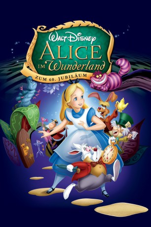
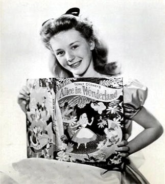
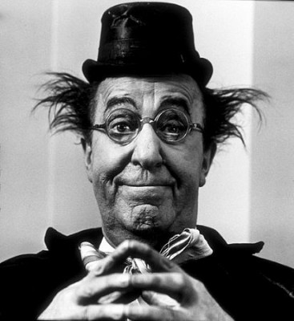
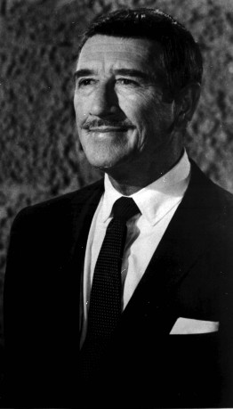
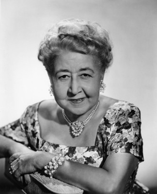
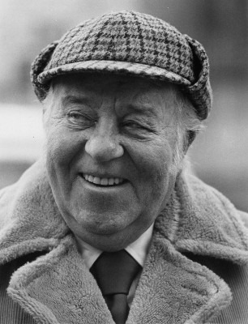
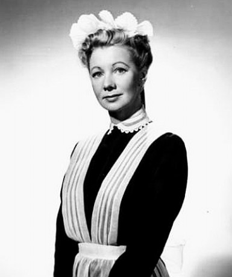
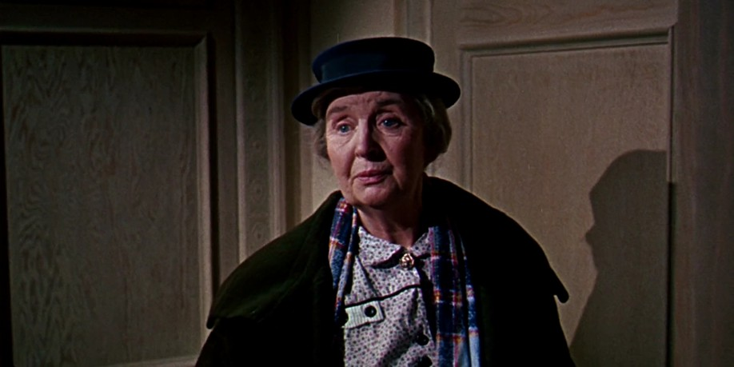
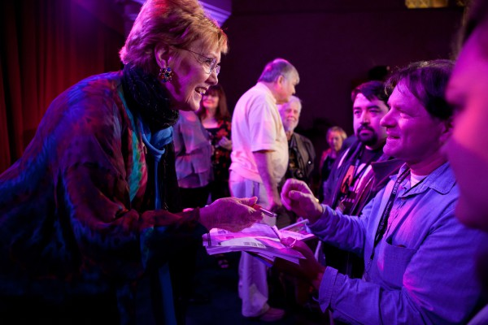

#1347 Alice im Wunderland
Alternativ: Alice in Wonderland
Auszeichnungen: für 1 Oscars nominiert
 
 IMDB-Wertung: 7.4 / 10
IMDB-Wertung: 7.4 / 10  Metascore: 0
Metascore: 0 
Alice läuft dem Weißen Kaninchen hinterher und fällt in den Kaninchenbau. Mit zwei Pillen, eine macht größer, die andere kleiner, gelangt sie ins Wunderland. Dort trifft Alice auf kuriose und groteske Wesen wie die Wasserpfeife rauchende Raupe, die Zwillinge Diedeldum und Diedeldei, die grinsende Tigerkatze und die "Nicht-Geburtstagsparty" von Hutmacher, Hase und Haselmaus. Alice erlebt das Krocketspiel der Herzkönigin und die Parade der Kartenarmee und wacht, als ihr der Prozess gemacht wird, aus ihrem Tagtraum auf.
Jahr: 1951
Dauer: 75 Minuten
FSK: 0
Land: USA Studio: ABCTonspuren: DTS - ,
Untertitel: Deutsch,
Auflösung: 1080p (1424x1080) Größe: 3594 MB
Genre: Abenteuer, Fantasy, Animation/Trick, Familie, Musical
Regisseur: Clyde Geronimi, Wilfred Jackson, Hamilton Luske
Drehbuch: Lewis Carroll, Winston Hibler, Ted Sears, Bill Peet, Erdman Penner
Soundtrack: Oliver Wallace
Darsteller:
-  Kathryn Beaumont als Alice
-  Ed Wynn als Mad Hatter
-  Richard Haydn als Caterpillar
 Sterling Holloway als Cheshire Cat
Sterling Holloway als Cheshire Cat- Jerry Colonna als March Hare
-  Verna Felton als Queen of Hearts
-  J. Pat O'Malley als Walrus / Carpenter / Dee / Dum
- Heather Angel als Alice's Sister
- Joseph Kearns als Doorknob
-  Queenie Leonard als Bird in the Tree
-  Doris Lloyd als The Rose
 Don Barclay als
Don Barclay als  Lucille Bliss als Sunflower / Tulip (uncredited)
Lucille Bliss als Sunflower / Tulip (uncredited)- Pinto Colvig als Flamingo (uncredited)
- Jack Mercer als Cards (uncredited)
-  Marni Nixon als Singing Flowers (uncredited)
- Bill Thompson als White Rabbit / Dodo
- Larry Grey als Bill
- Dink Trout als King of Hearts
- James MacDonald als Dormouse
- The Mellomen als Card Painters
- Bob Hamlin als Card Painter (uncredited)
- Bill Lee als Card Painter (uncredited)
- Tommy Luske als Young Pansy (uncredited)
 Clarence Nash als Dinah (uncredited)
Clarence Nash als Dinah (uncredited)- Thurl Ravenscroft als Card Painter (uncredited)
- Max Smith als Card Painter (uncredited)
- Norma Zimmer als White Rose (uncredited)
Datei: X:\Kinder Disney HD\1900-1999\Alice im Wunderland (1951, FSK12, 1424x1080).mkv seit 26.06.2015
Festplatte: Kinder-Filme+Trick
 Es gibt insgesamt 16 Filme in der Gruppe 'Kinder Disney HD\1900-1999'
Es gibt insgesamt 16 Filme in der Gruppe 'Kinder Disney HD\1900-1999'